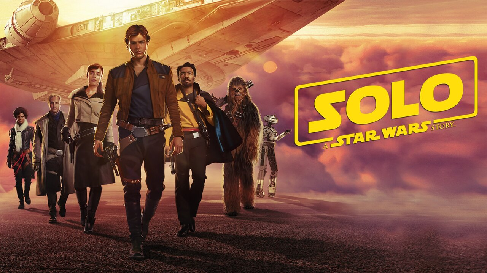
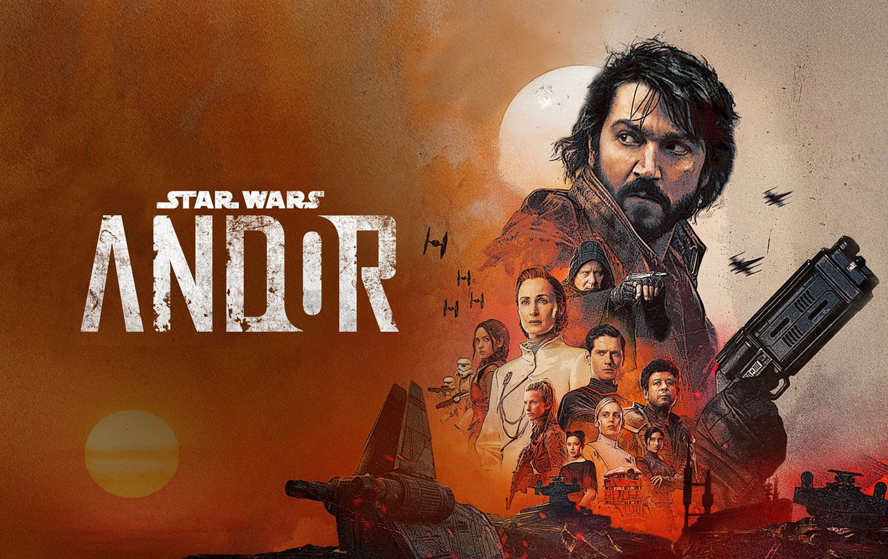

1977
The begining
.webp)
Deze film is geregiseerd door George Luckas en is oorsprokelijk de eerste film.
1980
The best movie

The empire stikes back word vaak aanschouwen als de beste film van de trilogie.
1983
A fight between father and son

Luke en Darth vader hebben een big fight.
1999
A special kid

Qui-Gon Jinn vindt een speciaal kind op de planeet tatoonine.
2002
The darkness is watching

Anakin en Amidala worden verliefd op elkaar
2005
In the dark

Anakin sluit zich aan bij de darkside en wordt een nieuwe sith lord genaamt Darth Vader
2008
Clones clones and more clones

Sith Lord Darth Sidious probeert om de Jedi Orde te vernietigen en de Republiek om te vormen tot een Keizerrijk
2015
A new jedi

Prinses Leia, Ray, Fin en Poe gaan opzoek naar Luke 30 jaar na de val van het Keizerrijk.
2016
Rebels

Een groep rebelen proberen de blauwdrukken te stelen van de Death Star.
2017
Learning from a real teacher

Ray probeert Luke te overtuigen om hen te helpen en slaagt er in.
2018
The past of Solo

Han wordt verlieft maar raakt gescheiden en sluit zich aan bij een bende smokkelaars.
2019
A special premier bounty hunter

Een eenzame bounty hunter moet Grogu opsporen en vermoorden, maar inplaats daarvan beschermt hij hem.
2019
One last fight

Palpetien keert terug met veel sith-vloten maar wordt tegen gehouden door het verzet.
2021
Tatooine's bad guy

Boba Fett keert terug naar Tatooine en wordt een misdaadbaas.
2022
A broken hero

Obi Wan Kenobi leeft ondergedoken op Tatooine, maar schiet in actie wanneer Leia ontvoerd wordt.
2022
The rebel leader

Andor is een kruimeldief maar raakt verwikkeld in een opstand en wordt de leider.